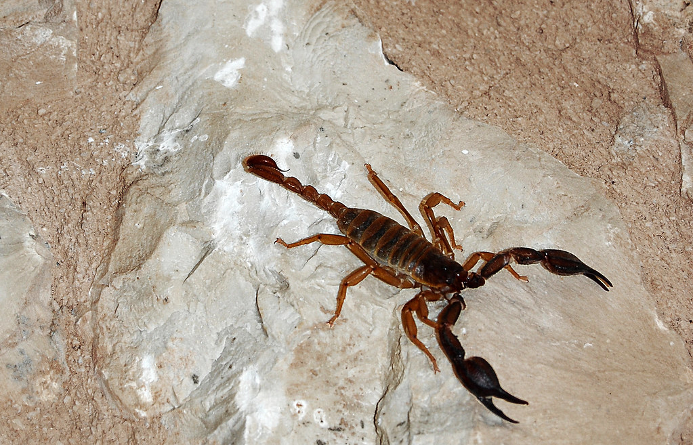

Top 10 Deadliest Animals
2,600 deaths per year
Some of the most deadly animals are those that deliver venom. Unlike poisonous animals, who secrete toxins, venomous animals directly deliver it using specialised body parts, through a bite or, in this case, a stinger.
Scorpions produce venom for the same reason that many species do, not to kill humans, but to subdue or kill their prey. However, the venom of 25 species of scorpion can be deadly to humans if you are unlucky enough to get in one’s way.
Stings often happen when scorpions are accidentally stepped on with bare feet, or when they are hiding in people’s shoes. They use it as a defence mechanism against getting crushed, rather than as an attack.
Around 2,600 deaths a year are caused by scorpion stings. The most lethal in the world is considered to be the Indian redscorpion (Hottentotta tamulus).
